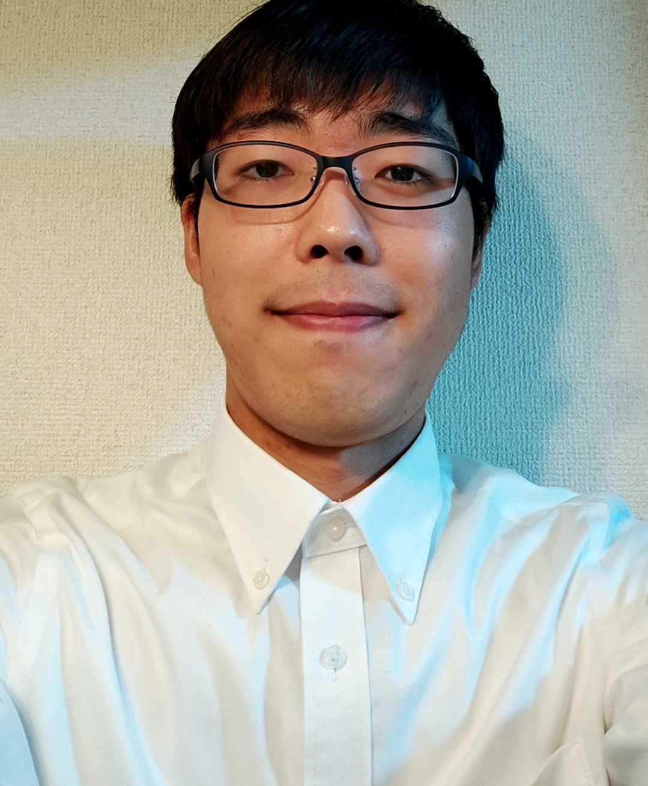

名前 羽田野匡平
年齢 24歳
生年月日 1997/04/19
血液型 A
mail 023cdd35@gmali.com
スキル
Word Excel HTML CSS JavaScript Ruby（実務経験なし、初級レベル)
社歴
2016/04 東京個別指導学院入社
2017/03 東京個別指導学院退社
2017/06 マツモトキヨシホールディングス入社
2019/08 マツモトキヨシホールディングス退職
2019/11 大和ライフプラス入社
2021/06 大和ライフプラス現在在職中
最終学歴
千葉日本大学第一高等学校
<特技>
将棋(参段)、ピアノ(耳コピ演奏)
<自己PR>
2021/3月頃からプログラミングを独学で始めました。
Progateなどの初心者向けプログラミング勉強サイトを利用しており、
1週間あたりおよそ7時間程学習しています。
昔から一つのことを真面目にコツコツ積み上げていくこと、
学習することや、常に新しい目標を立てて目標に向かい、学びながら試行
錯誤して取り組むことが好きで、現在はプログラミングと英語学習が
毎日の習慣になっています。また、業務の効率化のためショートカットキー
の活用や、タイピング練習などもしています。
す。
Webや業務アプリケーション開発を通して、貴社と共に
社会貢献と、自己成長をしていきたいと思っております。
どうぞよろしくお願いいたします。